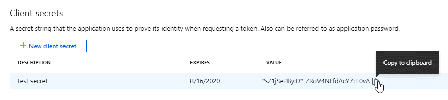

ドキュメントの変更をリクエスト
ドキュメントの変更をリクエスト GitHub で編集
GitHub で編集 寄稿者向けガイド
寄稿者向けガイドCloud Manager の Azure クレデンシャルとサブスクリプションの管理
Cloud Volumes ONTAP システムを作成するときに、そのシステムで使用する Azure クレデンシャルを選択する必要があります。従量課金制のライセンスを使用している場合は、 Marketplace サブスクリプションも選択する必要があります。複数の Azure クレデンシャルを使用する場合や、複数の Azure Marketplace サブスクリプションを Cloud Volumes ONTAP に使用する場合は、このページの手順に従います。
Cloud Manager で Azure サブスクリプションとクレデンシャルを追加するには、 2 つの方法があります。
-
追加の Azure サブスクリプションを Azure 管理 ID に関連付けます。
-
別の Azure クレデンシャルを使用して Cloud Volumes ONTAP を導入する場合は、サービスプリンシパルを使用して Azure 権限を付与し、そのクレデンシャルを Cloud Manager に追加します。
追加の Azure サブスクリプションを管理対象 ID に関連付ける
Cloud Manager では、 Cloud Volumes ONTAP を導入する Azure クレデンシャルと Azure サブスクリプションを選択できます。管理対象に別の Azure サブスクリプションを選択することはできません を関連付けない限り、アイデンティティプロファイルを作成します "管理された ID" それらの登録と。
管理対象 ID はです "最初の Azure アカウント" Cloud Manager からコネクタを導入する場合。コネクタを導入すると、 Cloud Manager Operator ロールが作成され、 Connector 仮想マシンに割り当てられます。
-
Azure ポータルにログインします。
-
[ サブスクリプション ] サービスを開き、 Cloud Volumes ONTAP を展開するサブスクリプションを選択します。
-
「 * アクセスコントロール（ IAM ） * 」をクリックします。
-
[ * 追加 > 役割の割り当ての追加 * ] をクリックして、権限を追加します。
-
Cloud Manager Operator * ロールを選択します。

Cloud Manager Operator は、で指定されたデフォルトの名前です "Cloud Manager ポリシー"。ロールに別の名前を選択した場合は、代わりにその名前を選択します。 -
仮想マシン * へのアクセスを割り当てます。
-
Connector 仮想マシンが作成されたサブスクリプションを選択します。
-
Connector 仮想マシンを選択します。
-
[ 保存（ Save ） ] をクリックします。
-
-
-
追加のサブスクリプションについても、この手順を繰り返します。
新しい作業環境を作成するときに、管理対象 ID プロファイルに対して複数の Azure サブスクリプションから選択できるようになりました。

Cloud Manager に Azure クレデンシャルを追加しておきます
Cloud Manager からコネクタを導入すると、必要な権限が割り当てられた仮想マシンで、 Cloud Manager によってシステムによって割り当てられた管理対象 ID を使用できるようになります。Cloud Volumes ONTAP 用の新しい作業環境を作成すると、 Cloud Manager でデフォルトで次の Azure クレデンシャルが選択されます。

|
既存のシステムに Connector ソフトウェアを手動でインストールした場合、初期クレデンシャルは追加されません。 "Azure のクレデンシャルと権限について説明します"。 |
異なる Azure クレデンシャルを使用して Cloud Volumes ONTAP を導入する場合は、 Azure Active Directory でサービスプリンシパルを作成して設定し、必要な権限を付与する必要があります。その後、 Cloud Manager に新しいクレデンシャルを追加できます。
サービスプリンシパルを使用した Azure 権限の付与
Cloud Manager には、 Azure でアクションを実行するための権限が必要です。Azure アカウントに必要な権限を付与するには、 Azure Active Directory でサービスプリンシパルを作成して設定し、 Cloud Manager で必要な Azure クレデンシャルを取得します。
次の図は、 Cloud Manager が Azure で操作を実行するための権限を取得する方法を示しています。1 つ以上の Azure サブスクリプションに関連付けられたサービスプリンシパルオブジェクトは、 Azure Active Directory の Cloud Manager を表し、必要な権限を許可するカスタムロールに割り当てられます。

Azure Active Directory アプリケーションの作成
Cloud Manager でロールベースアクセス制御に使用できる Azure Active Directory （ AD ）アプリケーションとサービスプリンシパルを作成します。
Azure で Active Directory アプリケーションを作成してロールに割り当てるための適切な権限が必要です。詳細については、を参照してください "Microsoft Azure のドキュメント：「 Required permissions"。
-
Azure ポータルで、 * Azure Active Directory * サービスを開きます。

-
メニューで、 * アプリ登録 * をクリックします。
-
[ 新規登録 ] をクリックします。
-
アプリケーションの詳細を指定します。
-
* 名前 * ：アプリケーションの名前を入力します。
-
* アカウントタイプ * ：アカウントタイプを選択します（ Cloud Manager で使用できます）。
-
* リダイレクト URI *: このフィールドは空白のままにできます。
-
-
[*Register] をクリックします。
AD アプリケーションとサービスプリンシパルを作成しておきます。
アプリケーションをロールに割り当てます
Azure で Cloud Manager に権限を付与するには、サービスプリンシパルを 1 つ以上の Azure サブスクリプションにバインドし、カスタムの「 OnCommand Cloud Manager Operator 」ロールを割り当てる必要があります。
-
をダウンロードします "Cloud Manager Azure ポリシー"。
リンクを右クリックし、 [ 名前を付けてリンクを保存 …] をクリックしてファイルをダウンロードする。 -
割り当て可能なスコープに Azure サブスクリプション ID を追加して、 JSON ファイルを変更します。
ユーザが Cloud Volumes ONTAP システムを作成する Azure サブスクリプションごとに ID を追加する必要があります。
-
例 *
"AssignableScopes": [ "/subscriptions/d333af45-0d07-4154-943d-c25fbzzzzzzz", "/subscriptions/54b91999-b3e6-4599-908e-416e0zzzzzzz", "/subscriptions/398e471c-3b42-4ae7-9b59-ce5bbzzzzzzz" -
-
JSON ファイルを使用して、 Azure でカスタムロールを作成します。
次の手順は、 Azure Cloud Shell で Bash を使用してロールを作成する方法を示しています。
-
開始 "Azure Cloud Shell の略" Bash 環境を選択します。
-
JSON ファイルをアップロードします。

-
Azure CLI で次のコマンドを入力します。
az role definition create --role-definition Policy_for_cloud_Manager_Azure_3.9.8.json
これで、 _Cloud Manager Operator _ という名前のカスタムロールが作成されます。
-
-
ロールにアプリケーションを割り当てます。
-
Azure ポータルで、 * Subscriptions * サービスを開きます。
-
サブスクリプションを選択します。
-
[* アクセス制御 (IAM)] 、 [ 追加 ] 、 [ 役割の割り当ての追加 *] の順にクリックします。
-
[* 役割 ] タブで、 * Cloud Manager Operator * 役割を選択し、 * Next * をクリックします。
-
[* Members* （メンバー * ） ] タブで、次の手順を実行します。
-
[* ユーザー、グループ、またはサービスプリンシパル * ] を選択したままにします。
-
[ メンバーの選択 ] をクリックします。

-
アプリケーションの名前を検索します。
次に例を示します。

-
アプリケーションを選択し、 * Select * をクリックします。
-
「 * 次へ * 」をクリックします。
-
-
[ レビュー + 割り当て（ Review + Assign ） ] をクリックします。
サービスプリンシパルに、 Connector の導入に必要な Azure 権限が付与されるようになりました。
Cloud Volumes ONTAP を複数の Azure サブスクリプションから導入する場合は、サービスプリンシパルを各サブスクリプションにバインドする必要があります。Cloud Manager では、 Cloud Volumes ONTAP の導入時に使用するサブスクリプションを選択できます。
-
Windows Azure Service Management API 権限を追加しています
サービスプリンシパルに「 Windows Azure Service Management API 」の権限が必要です。
-
Azure Active Directory * サービスで、 * アプリ登録 * をクリックしてアプリケーションを選択します。
-
[API アクセス許可 ] 、 [ アクセス許可の追加 ] の順にクリックします。
-
Microsoft API* で、 * Azure Service Management * を選択します。

-
[* 組織ユーザーとして Azure サービス管理にアクセスする *] をクリックし、 [ * 権限の追加 * ] をクリックします。

アプリケーション ID とディレクトリ ID を取得しています
Cloud Manager に Azure アカウントを追加するときは、アプリケーション（クライアント）の ID とディレクトリ（テナント） ID を指定する必要があります。Cloud Manager は、この ID を使用してプログラムによってサインインします。
-
Azure Active Directory * サービスで、 * アプリ登録 * をクリックしてアプリケーションを選択します。
-
アプリケーション（クライアント） ID * とディレクトリ（テナント） ID * をコピーします。

クライアントシークレットの作成
Cloud Manager がクライアントシークレットを使用して Azure AD で認証できるようにするには、クライアントシークレットを作成し、そのシークレットの値を Cloud Manager に指定する必要があります。
-
Azure Active Directory * サービスを開きます。
-
[* アプリ登録 * ] をクリックして、アプリケーションを選択します。
-
［ * 証明書とシークレット > 新しいクライアントシークレット * ］ をクリックします。
-
シークレットと期間の説明を入力します。
-
[ 追加（ Add ） ] をクリックします。
-
クライアントシークレットの値をコピーします。

これでサービスプリンシパルが設定され、アプリケーション（クライアント） ID 、ディレクトリ（テナント） ID 、およびクライアントシークレットの値をコピーしました。この情報は、 Cloud Manager で Azure アカウントを追加するときに入力する必要があります。
Cloud Manager にクレデンシャルを追加してください
必要な権限を Azure アカウントに付与したら、そのアカウントのクレデンシャルを Cloud Manager に追加できます。この手順を完了すると、複数の Azure クレデンシャルを使用して Cloud Volumes ONTAP を起動できます。
作成したクレデンシャルをクラウドプロバイダで使用できるようになるまでに数分かかることがあります。Cloud Manager にクレデンシャルを追加するまで数分待ってから、
Cloud Manager の設定を変更する前に、コネクタを作成する必要があります。 "詳細をご確認ください"。
-
Cloud Manager コンソールの右上にある設定アイコンをクリックし、 * クレデンシャル * を選択します。

-
[Add Credentials] をクリックし、ウィザードの手順に従います。
-
* 資格情報の場所 * ： Microsoft Azure > Connector * を選択します。
-
* クレデンシャルの定義 * ：必要な権限を付与する Azure Active Directory サービスプリンシパルに関する情報を入力します。
-
アプリケーション（クライアント） ID ：を参照してください [Getting the application ID and directory ID]。
-
ディレクトリ（テナント） ID ：を参照してください [Getting the application ID and directory ID]。
-
クライアントシークレット：を参照してください [Creating a client secret]。
-
-
* Marketplace サブスクリプション *: 今すぐ登録するか、既存のサブスクリプションを選択して、 Marketplace サブスクリプションをこれらの資格情報に関連付けます。
Cloud Volumes ONTAP の料金を時間単位で支払う（ PAYGO ）には、 Azure のクレデンシャルが Azure Marketplace からのサブスクリプションに関連付けられている必要があります。
-
* 確認 * ：新しいクレデンシャルの詳細を確認し、 * 追加 * をクリックします。
-
これで、から別のクレデンシャルセットに切り替えることができます [ 詳細と資格情報 ] ページ "新しい作業環境を作成する場合"
 ページで [ 資格情報の編集 ] をクリックした後で資格情報を選択する方法を示すスクリーンショット"]
ページで [ 資格情報の編集 ] をクリックした後で資格情報を選択する方法を示すスクリーンショット"]
既存のクレデンシャルを管理する
Cloud Manager にすでに追加した Azure クレデンシャルの管理では、 Marketplace でのサブスクリプションの関連付け、クレデンシャルの編集、および削除を行います。
Azure Marketplace サブスクリプションをクレデンシャルに関連付ける
Cloud Manager に Azure のクレデンシャルを追加したら、 Azure Marketplace サブスクリプションをそれらのクレデンシャルに関連付けることができます。サブスクリプションを使用すると、従量課金制の Cloud Volumes ONTAP システムを作成し、他のネットアップクラウドサービスを使用できます。
Cloud Manager にクレデンシャルを追加したあとに、 Azure Marketplace サブスクリプションを関連付けるシナリオは 2 つあります。
-
Cloud Manager にクレデンシャルを最初に追加したときに、サブスクリプションを関連付けていません。
-
既存の Azure Marketplace サブスクリプションを新しいサブスクリプションに置き換える場合。
Cloud Manager の設定を変更する前に、コネクタを作成する必要があります。 "詳細をご確認ください"。
-
Cloud Manager コンソールの右上にある設定アイコンをクリックし、 * クレデンシャル * を選択します。
-
一連の資格情報のアクションメニューをクリックし、 * 契約の関連付け * を選択します。
-
ダウンリストからサブスクリプションを選択するか、 * サブスクリプションの追加 * をクリックして、手順に従って新しいサブスクリプションを作成します。
次のビデオは、作業環境ウィザードのコンテキストから開始しますが、 [ サブスクリプションの追加 ] をクリックした後も同じワークフローが表示されます。
クレデンシャルの編集
Azure サービスクレデンシャルの詳細を変更して、 Cloud Manager で Azure クレデンシャルを編集します。たとえば、サービスプリンシパルアプリケーション用に新しいシークレットが作成された場合は、クライアントシークレットの更新が必要になることがあります。
-
Cloud Manager コンソールの右上にある設定アイコンをクリックし、 * クレデンシャル * を選択します。
-
一連の資格情報のアクションメニューをクリックし、 * 資格情報の編集 * を選択します。
-
必要な変更を行い、 * 適用 * をクリックします。
クレデンシャルを削除し
クレデンシャルが不要になった場合は、 Cloud Manager から削除できます。削除できるのは、作業環境に関連付けられていないクレデンシャルのみです。
-
Cloud Manager コンソールの右上にある設定アイコンをクリックし、 * クレデンシャル * を選択します。
-
一連の資格情報のアクションメニューをクリックし、 * 資格情報の削除 * を選択します。
-
削除を確定するには、 * 削除 * をクリックします。